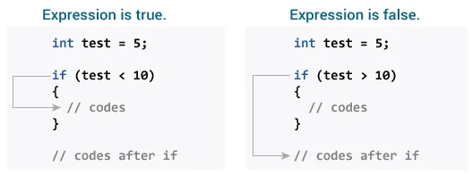

Nome: Carlos Lincon
Prediction – Reading technique
A predição, ou prediction é uma atividade de pré-leitura na qual se é levado a deduzir o conteúdo de um texto. Por exemplo, ao ver uma foto ou uma manchete em um site, pode-se prever qual o assunto da matéria. Com isso, o leitor será estimulado a ler, ou não. A predição pode ser feita através de elementos como:
-
Conhecimento prévio sobre o tema – também conhecido como background knowledge. Se você teve algum contato com o tema do texto, com certeza terá mais facilidade na sua leitura. Quanto mais cultura geral tiver o leitor, mais fácil será a predição. Só que, para isso, o melhor remédio é o hábito da leitura. Procure ler e conhecer os principais temas que você julgue cair na sua prova, não só em Inglês mas também em outras áreas.
-
Contexto semântico – palavras que têm ideias relacionadas, como por exemplo: escola, livro, aluno, cadeira, professora etc. Funcionam como uma tempestade de palavras. Em qualquer assunto abordado no texto, é fundamental que você perceba alguns vocábulos que estão relacionados entre si, a fim de que você possa compreender a mensagem com mais rapidez.
Nome: Rafael Gonzaga
Examples Prediction
Com base no modelo de leitura defendido por Goodman (1987), as estratégias mais importantes são as seguintes: a predição (a capacidade que o leitor tem de antecipar-se ao texto, à medida que vai processando a sua compreensão); a seleção (a habilidade que o leitor tem de selecionar apenas os índices relevantes para a compreensão e propósitos da leitura); a inferência (através da qual o leitor completa a informação utilizando as suas competências linguística e comunicativa, o seu conhecimento conceptual e seus esquemas mentais ou conhecimentos prévios); a confirmação (utilizada para verificar se as predições e as inferências estão certas ou se precisam ser reformuladas) e a correção (ou seja, uma vez não confirmada a predição, o leitor retrocede no texto a fim de levantar outras hipóteses, buscando outras pistas, sempre na tentativa de encontrar sentido no que lê).
Examples - reading documentation
Example – The background knowledge
Nome: Leticia Nascimento
Contexto in programming languages
A linguagem de programação é um método padronizado, formado por um conjunto de regras sintáticas e semânticas, de implementação de um código fonte - que pode ser compilado e transformado em um programa de computador, ou usado como script interpretado - que informará instruções de processamento ao computador.
Contexto in programming languages
Nome: Maria Luiza
WHAT IS BRAINSTORMING?
Brainstorming é uma técnica que, por meio do compartilhamento espontâneo de ideias, busca encontrar a solução para um problema ou gerar insights de criatividade. A ideia desse processo é dar vida à máxima “duas cabeças pensam melhor do que uma”. Sendo assim, é fundamental que o brainstorming envolva um número mais elevado de participantes, de preferência reunindo pessoas ativas na empresa, mas que tragam perspectivas diferentes. Essa pluralidade de ideias é o pilar da técnica. Para que seja bem-sucedido, o processo deve focar em quantidade, não em qualidade. Assim, é importante que o brainstorming seja completamente livre de críticas. Mesmo as ideias que parecem ineficientes devem ser levadas em conta, afinal, elas podem ser o ponto de partida para a construção de pensamentos mais aprofundados. Contudo, é importante não confundir essa liberdade de ideias com a falta de um objetivo claro. É crucial que os participantes do processo tenham em mente qual problema querem solucionar ou que tipo de novidade querem desenvolver. Ao final, os melhores insights são extraídos e convertidos em estratégia.
Nome: D.Keven
Brainstroming – where is used?
- Desenvolvimento de novos produtos;
- Publicidade;
- Resolução de problemas;
- Gestão de processos;
- Gestão de projetos;
- Formação de equipes;
Nome: João Pedro
Brainstorming – structure
Brainstorming examples – New Project ideas
Brainstorming – Problem Solving